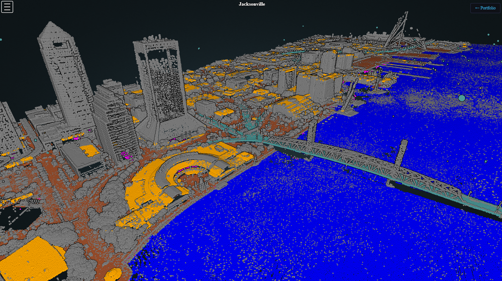
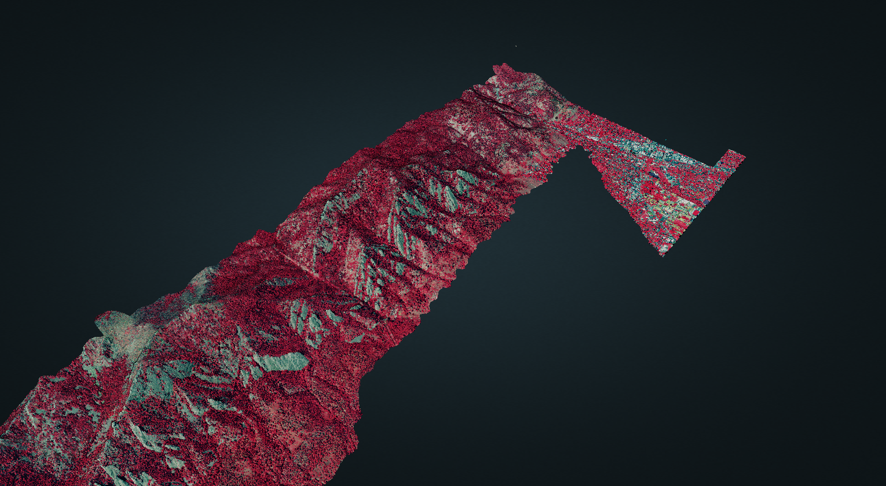
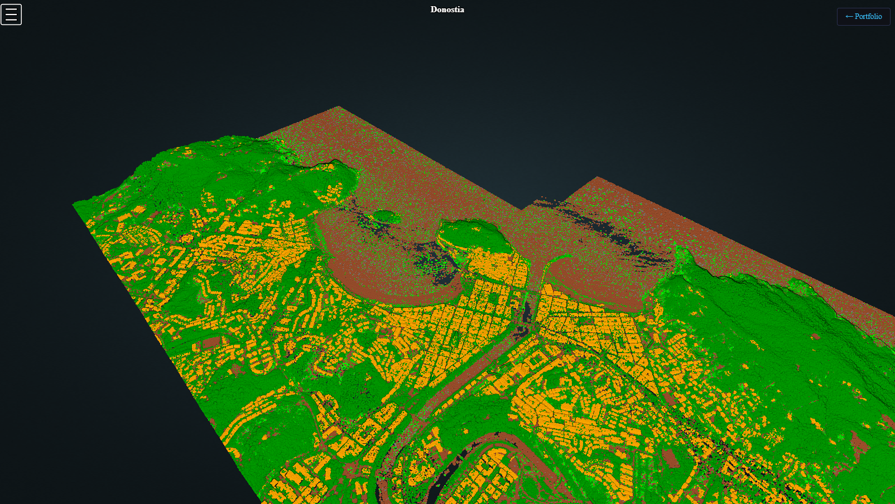
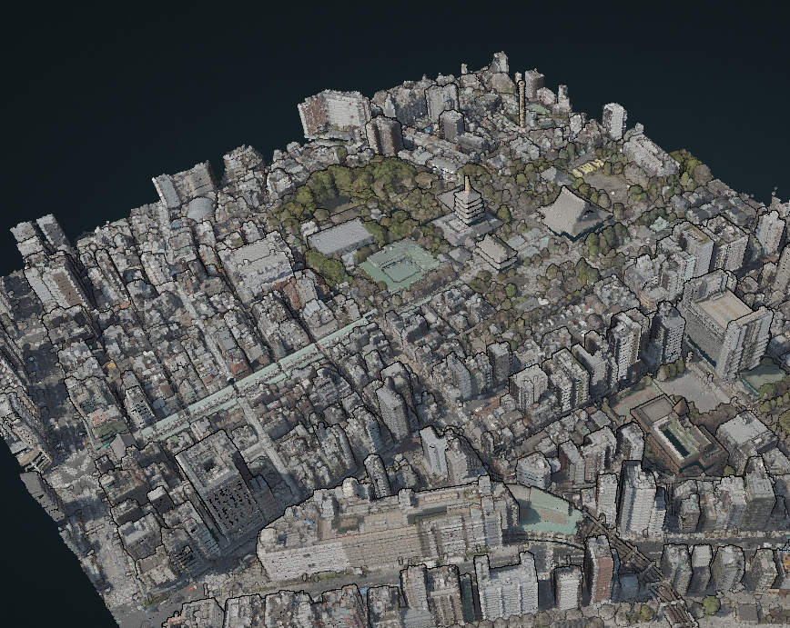

Jacksonville Downtown
Aerial LiDAR scan of downtown Jacksonville, Florida from 2019.
View point cloud →A curated list of interactive 3D LiDAR visualizations built with Potree.

Aerial LiDAR scan of downtown Jacksonville, Florida from 2019.
View point cloud →
Colorized LiDAR scan of the Flatirons rock formations near Boulder, Colorado.
View point cloud →
LiDAR scan of Donostia (San Sebastián), a coastal city in the Basque Country of northern Spain.
View point cloud →
Aerial LiDAR scan of Sensō-ji, Tokyo's oldest temple, and the surrounding Asakusa district from 2024.
View point cloud →